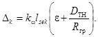
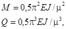
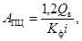
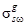
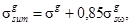
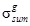

ГОССТРОЙ СССР
ВСЕСОЮЗНОЕ ПРОЕКТНОЕ ОБЪЕДИНЕНИЕ ПО ВОДОСНАБЖЕНИЮ
И КАНАЛИЗАЦИИ
СОЮЗВОДОКАНАЛПРОЕКТ
ГОСУДАРСТВЕННЫЙ ОРДЕНА ТРУДОВОГО КРАСНОГО ЗНАМЕНИ
ПРОЕКТНЫЙ ИНСТИТУТ
СОЮЗВОДОКАНАЛПРОЕКТ
ПОСОБИЕ
ПО ПРОЕКТИРОВАНИЮ СЕТЕЙ
ВОДОСНАБЖЕНИЯ И КАНАЛИЗАЦИИ
В СЛОЖНЫХ ИНЖЕНЕРНО-ГЕОЛОГИЧЕСКИХ УСЛОВИЯХ
(к СНиП
2.04.02-84 и 2.04.03-85)
Т-3083
|
ДИРЕКТОР ИНСТИТУТА |
Ю.Н. АНДРИАНОВ |
|
|
ГЛАВНЫЙ ИНЖЕНЕР |
А.Н. МИХАЙЛОВ |
|
|
ОТВЕТСТВЕННЫЙ ИСПОЛНИТЕЛЬ ГЛАВНЫЙ СПЕЦИАЛИСТ |
Л.В. ЯРОСЛАВСКИЙ |
|
Пособие рассмотрено и утверждено на техническом совете института 4.01.90 (протокол № 1). |
МОСКВА, 1990 г.
Разделы I «Общие указания» и II «Просадочные грунты» настоящего Пособия разработаны институтами ВНИИОСП им. Герсеванова (к.т.н. Галицкий В.Г.) и Союзводоканалпроект (инж. Ярославский Л.В.) при участии ВНИИ ВОДГЕО (к.т.н. Готовцев В.И.), разделы III «Засоленные и набухающие грунты» и IV «Сильносжимаемые грунты» ВНИИОСП им. Герсеванова (д.т.н. Сарочан Е.А., к.т.н. Петрухин В.П., к.т.н. Никифорова Н.С.), В подготовке пособия участвовали:
по разделу «Просадочные грунты» - институт Ростовский Водоканалпроект (инж. Пасева Е.П. и Седых А.Г.), по разделу «Сильносжимаемые грунты» - институт Ленинградский Водоканалпроект (инж. Макаров В.М.)
В Пособии обобщен опыт проектирования и эксплуатации гражданских и промышленных объектов на просадочных, набухающих, засоленных и сильносжимаемых грунтах организаций объединения Союзводоканалниипроект, а также институтов Северо-Кавказского региона, изученный Ростовским Водоканалпроектом, и опыт Ленинградского ВКП по проектированию объектов на сильносжимаемых грунтах.
Настоящее «Пособие» разработано в дополнение к СНиП 2.04.02-84 и 2.04.03-85 и детализируют отдельные положения этих документов в части проектирования мероприятий по прокладке сетей водоснабжения и канализации в сложных инженерно-геологических условиях. Наряду с этим даны рекомендации по конструктивному решению сетей в этих условиях, иллюстрируемые рядом рисунков.
1.1. Настоящее «Пособие» рекомендуется использовать при проектировании сетей водоснабжения и канализации в населенных местах и на промышленных территориях, находящихся в сложных инженерно-геологических условиях, в дополнение к указаниям главы СНиП 2.02.01-83 «Основания зданий и сооружений» и Пособия к ней. При проектировании должны быть разработаны мероприятия, исключающие возможность возникновения осадок сетей, либо обеспечивающие эксплуатационную пригодность возведенных сетей независимо от возможных (прогнозируемых) осадок основания.
1.2. Сети водоснабжения и канализации, особенно напорные, при неправильном их проектировании, некачественном исполнении, неудовлетворительной эксплуатации или повреждении при эксплуатации, становятся постоянно действующими источниками замачивания и переувлажнения грунтов, приводящими к просадкам оснований не только под трубопроводом, как источником замачивания, но и под другими сетями, а также под зданиями и сооружениями, близко расположенными к местам утечек.
1.3. Общая особенность оснований, сложенных просадочными, набухающими и засоленными грунтами, заключается в изменении их физико-механических свойств при повышении влажности выше определенного уровня. В связи с этим, основная группа мероприятий по обеспечению эксплуатационных качеств сетей водоснабжения и канализация заключается в недопущении замачивания оснований проектируемых трубопроводов за счет повышения надежности принимаемых проектных решений и соблюдения требований по строительству и эксплуатации.
При проектировании фундаментов и оснований зданий и сооружений необходимо учитывать наличие вблизи от них коллекторов и напорных трубопроводов.
1.5. Проектами сетей должны предусматриваться способы и места сброса воды из трубопроводов в случае промывки, прочистки или ремонта сетей, исключающие замачивание оснований в зоне застройки.
1.6. Для облегчения наблюдения за состоянием трубопроводов и ремонта на участках, где это возможно, следует предусматривать надземную прокладку напорных трубопроводов.
В зданиях и сооружениях прокладка трубопроводов с этой целью должна выполняться выше уровня пола подвала или технического подполья. Ниже уровня пола укладка трубопроводов допускается в водонепроницаемых каналах с отводом из них аварийных вод.
1.7. В комплекс водозащитных мероприятий также входят: компоновка генплана, планировка застраиваемой территории, качественная засыпка пазух котлованов и траншей, устройство вокруг люков, колодцев и камер отмосток, прокладка внешних сетей в случаях, предусмотренных настоящим пособием, на поддонах, в каналах или тоннелях.
1.8. При разработке генеральных планов должно обеспечиваться сохранение естественных условий отведения дождевых и талых вод.
Емкостные сооружения и водонесущие сети следует располагать по возможности на участках с наличием дренирующего слоя и с минимальной величиной толщин просадочных, набухающих и засоленных грунтов. При выполнении этой рекомендации, вода утечек будет отводиться дренирующим слоем, благодаря чему предотвратится ее проникновение в нижележащие слои просадочных, засоленных или набухающих грунтов. Необходимо прослеживать простирание дренирующих слоев с тем, чтобы избежать застаивания и скопления воды на площадке, особенно в зоне сетей, зданий и сооружений. Если такая опасность возможна, необходимо сочетать естественные дренажные слои с искусственными дренажными устройствами.
1.9. Когда условия укладки труб требуют повышенной степени уплотнения грунта обратной засыпки, необходимо обеспечивать уплотнение засыпаемого грунта до коэффициента уплотнения Купл. ³ 0,93.
Назначение технологических параметров уплотняемых грунтов (толщина слоев грунта, влажность, рекомендуемые механизмы и количество проходов при трамбовании) следует осуществлять согласно СНиП 3.02.01-87 «Земляные сооружения. Основания и фундаменты» с учетом рекомендуемого приложения 1 к настоящему «Пособию».
1.10. Проекты сетей водоснабжения и канализации, кроме технологических, планировочных (генплан и вертикальная планировка) и конструктивных мероприятий, разработанных в соответствии с СНиП 2.02.01-83, 2.04.02-84 и 2.04.03-85 и настоящим Пособием, должны содержать требования к производству строительных работ (п.п. 1.4, 2.4) и эксплуатации. Последнее положение реализуется в примечании, помещаемом на листе «Общие данные» следующего содержания: «Эксплуатацию сетей (водопровода, коллектора) и сооружений на них осуществлять, руководствуясь «Рекомендациями по эксплуатации зданий, сооружений и инженерных сетей, возведенных на просадочных грунтах», разработанных ЦНИИпромзданий, НИИОСП им. Герсеванова и Ростовским НИИ АКХ им. Памфилова в 1984 г.
2.1. При проектировании оснований, сложенных просадочными грунтами, необходимо учитывать, что при повышении влажности выше определенного уровня они дают дополнительные деформации просадки от внешней нагрузки и (или) собственной массы грунта.
2.2. При планировке площадки срезкой, возможная величина просадки значительно уменьшается, поэтому II тип грунтовых условий по просадочности может перейти в I тип.
При вертикальной планировке насыпью возможно существенное увеличение просадки грунтов от собственного веса при замачивании, т.е. I тип перейдет во II.
Так при устройстве насыпи высотой 5 - 6 м величина просадки может увеличиться более чем в 2 раза.
Таким образом, при планировке территорий с подсыпкой грунта необходимо обеспечить до начала строительства устранение просадок основания с остаточными возможными осадками от веса сооружения не более 5 см.
2.3. Подсыпка при планировке территории, обратные засыпки котлованов и траншей должны осуществляться из местных глинистых грунтов. Просадочные свойства этих грунтов должны быть устранены при их укладке в насыпь. Применение песчаных и крупнообломочных грунтов, строительного мусора и других дренирующих материалов для планировочных насыпей и обратной засыпки котлованов и траншей на площадках с грунтовыми условиями II типа по просадочности не допускается.
Грунт обратной засыпки траншей должен иметь число пластичности JL £ 0,1 и отсыпаться при оптимальной влажности слоями с уплотнением каждого слоя до требуемой плотности (заданные коэффициент уплотнения грунта или плотность сухого грунта) контролируемой метрологическими средствами строительных лабораторий. Требуемую плотность грунта назначают в зависимости от материала труб, глубины и способа их укладки, а также в зависимости от нагрузки на поверхности уплотненного грунта (таблица П.1). Плотность утрамбованного сухого грунта должна быть не менее 1,6 - 1,7 т/куб. м и назначаться в зависимости от результатов опытного уплотнения, зафиксированных в соответствующих актах.
2.4. При проектировании и строительстве сетей на просадочных грунтах с грунтовыми условиями II типа по просадочности применяются водозащитные мероприятия (п. 1.4) с целью снижения или полного исключения замачивания грунтов основания.
2.5. Для напорных трубопроводов, прокладываемых в просадочных грунтах I типа и II типа с возможной просадкой до 20 см, необходимо принимать следующие виды труб:
для систем водоснабжения всех категорий согласно п. 8.21 СНиП 2.04.02-84;
для систем канализации - железобетонные напорные, асбестоцементные, пластмассовые. На участках с рабочим давлением свыше 0,9 МПа (9 кг/кв. см) допускается применение стальных труб. При этом на просадочных грунтах II типа не допускается применение асбестоцементных напорных труб с муфтами типа САМ.
2.6. Для напорных трубопроводов в грунтовых условиях II типа с возможной просадкой более 20 см:
для систем водоснабжения I и II категории обеспеченности подачи воды водоводы и сети следует проектировать из сварных (стальных или пластмассовых) труб, применение раструбных труб не допускается;
для систем водоснабжения III категории обеспеченности подачи воды и напорных сетей канализации допускается применение раструбных труб с гибкими стыковыми соединениями. С этой целью для заделки стыков железобетонных, чугунных и пластмассовых (ПВХ) труб должны применяться резиновые уплотнительные манжеты.
На участках с рабочим давлением более 0,6 МПа (6 кг/кв. см) следует применить только стальные трубы.
2.7. Для самотечных трубопроводов следует применять железобетонные, асбестоцементные напорные и керамические канализационные трубы.
Асбестоцементные трубы допускается применять только после выборочной проверки соответствия основных размеров стыкового соединения (наружного диаметра обточенных концов труб и внутреннего диаметра муфт) требованиям ГОСТ 539-80.
2.8. При проектировании трубопроводов из полиэтиленовых труб необходимо предусматривать их укладку на уплотненное основание, засыпку пазух местным грунтом с уплотнением до Купл ³ 0,95, на несварных трубопроводах - установку защитных кожухов в местах пересечения с другими сетями на расстоянии 2 - 3 м в каждую сторону от пересечения.
Для того, чтобы избежать возникновения продольных трещин в трубопроводах из пластмассовых труб, необходимо добиваться гарантированного требуемого уплотнения грунта обратной засыпки. С этой целью следует доводить уплотнение грунта с обеих сторон уложенных труб до появления 5 %-ной овальности в вертикальной плоскости труб или применять для обратной засыпки грунт с добавлением вяжущих материалов (безцементный грунтоцемент и т.п.)
2.9. Пластмассовые трубы, когда их овальность создать невозможно, а также во всех случаях полихлорвиниловые трубы, допускается применять только при их укладке в канале или в защитном кожухе из железобетонных или бетонных труб с гибкой заделкой стыковых соединений. При этом в кожухах, выходящих в колодцы, межтрубный зазор на длину 1 м следует заделывать цементным раствором при предварительной кольцевой прочеканке по торцу кожуха просмоленной прядью. Поскольку такая конструкция трубопроводов приводит к сложным и дорогим решениям, ее следует применять только в сетях, предназначенных для транспортировки жидкостей, агрессивных по отношению к металлу или бетону.
2.10. Из-за недостаточной прочности асбестоцементных труб и трудности надежной герметизации стыковых соединений несварных трубопроводов, на застроенных территориях при грунтовых условиях II типа просадочности применение этих труб допускается только при гарантированном обеспечении необходимой плотности уплотнения грунта основания и обратной засыпки. Использование в этих условиях железобетонных труб со стальным сердечником, ввиду их низкой жесткости, не допускается.
2.11. Чугунные напорные трубы диаметром до 300 мм, отливаемые из серого чугуна центробежным способом, в грунтовых условиях II типа просадочности допускается применять для сетей, прокладываемых в траншеях в пределах населенных пунктов с малоэтажной застройкой и на территории сельскохозяйственных предприятий. При многоэтажной застройке и на территории промышленных предприятий применение этих труб возможно только при их прокладке в каналах.
Чугунные напорные трубы, диаметром 400 мм и более, отливаемые из серого чугуна способом полунепрерывного литья, для прокладки в просадочных грунтах II типа не рекомендуются, т.к. они имеют большие остаточные напряжения и могут повреждаться при сравнительно небольших превышениях нагрузок (внешней и от внутреннего давления). Кроме того, их повреждения характеризуются отрывом больших кусков трубы, что приводит к быстрому размыву и подтоплению значительных территорий.
Указанные выше ограничения не распространяются на напорные трубы всех диаметров, изготовляемые из чугуна с шаровидным графитом.
2.12. Стыки укладываемых в грунте раструбных труб должны заделываться эластичным материалом, обеспечивающим герметичность стыков при просадке грунта и при образовании угла от 1,5° до 2° (в зависимости от диаметра труб по п. 2.15) между осями смежных труб.
Заделка стыков асбестоцементом допускается только в дополнение к заделке просмоленной прядью или резиновыми кольцами. Применение жесткой заделки (цементный раствор и т.п.) для зачеканки стыков не допускается.
Аналогичные требования предъявляются к заделке сопряжений канализационных труб со стенками колодцев.
В грунтовых условиях II типа просадочности с возможными просадками более 20 см при бесканальной прокладке у стыковых соединений труб следует предусматривать устройство глиняных замков.
2.13. Гибкость трубопроводов с раструбными и муфтовыми соединениями следует обеспечивать конструкцией стыков с применением резиновых уплотнителей, а также путем устройства зазоров между гладкими торцами труб и упорными поверхностями в раструбах сопрягаемых труб. Рекомендуемые зазоры в стыковых соединениях труб приведены в табл. 2.1.
Таблица 2.1.
|
Диаметр в мм |
Величина зазора, мм |
|
|
Асбестоцементные |
до 300 |
5 - 7 |
|
более 300 |
7 - 10 |
|
|
Железобетонные напорные |
до 1000 |
5 |
|
более 1000 |
20 |
|
|
безнапорные |
до 700 |
10 |
|
более 700 |
15 |
|
|
Керамические |
до 300 |
3 - 5 |
|
более 300 |
7 - 8 |
|
|
Чугунные на резиновых кольцах |
до 250 |
5 - 7 |
|
300 - 1200 |
8 - 10 |
2.14. Стыковые соединения труб должны обеспечивать герметичность трубопровода и быть химически стойкими к агрессивному воздействию транспортируемой жидкости. Уплотнительные материалы и способы заделки соединений определяются в зависимости от вида применяемых труб и назначения трубопровода. При гибком соединении труб в качестве герметика применяются специальные резиновые кольца:
- для асбестоцементных труб - по ГОСТу 5228-76;
- для железобетонных безнапорных труб типа ТБ, ТС, ТБП и ТСП, изготовляемых по ГОСТу 6482-88, для напорных, изготовляемых по ГОСТу 125860-83 и напорных со стальным сердечником, изготовляемых по ГОСТу 26819-86, - кольца по ТУ 381051222-88;
- для чугунных напорных труб в качестве уплотнителей применяются резиновые манжеты по ГОСТ 21053-75.
Резиновые кольца для уплотнения стыков должны поставляться комплектно с трубами. Для керамических труб в качестве уплотнительного материала применяется битумизированная или просмоленная пеньковая прядь.
Проектирование стыковых соединений труб следует выполнять с учетом «Пособия по укладке и монтажу чугунных, железобетонных и асбестоцементных трубопроводов водоснабжения и канализации (к СНиП 3.05.04-85)», Стройиздат, 1989 г.
2.15. Резиновые кольца по ТУ 381051222-88, примененные для стыковых соединений железобетонных труб по ГОСТ 12586.0-83; допускают при монтаже и эксплуатации взаимный поворот труб в стыке и прокладку трубопроводов по плавной кривой с радиусом Rтр. При этом для труб диаметром от 500 до 800 мм угол поворота труб составляет 2°00' и радиус кривой 145 м, а для труб диаметром от 1000 до 1600 мм соответственно 1°30' и 190 м. Следовательно, если монтаж трубопровода из стыковых труб на резиновых кольцах выполнен с отсутствием угла взаимного поворота торцов труб в вертикальной плоскости стыков, такой трубопровод будет оставаться герметичным при возможных осадках основания, вызывающих кривизну поверхности Rгр не более допускаемой для трубопровода Rтр.
2.16. При возможной просадке от собственной массы грунта свыше 10 см условие, при котором сохраняется водонепроницаемость безнапорного трубопровода вследствие горизонтальных перемещений грунта, определяется выражением
Dlim > Dk + Ds (1),
где Dlim - допустимая осевая компенсационная способность стыкового соединения труб в см, принимаемая равной половине глубины щели раструбных труб или длины муфты стыковых соединений;
Dk - необходимая величина компенсационной способности стыкового соединения, возникающая при его просадках от собственной массы - определяется из условия воздействия горизонтальных перемещений грунта;
Ds - величина выполненного при строительстве зазора между торцами труб в стыке - определяется по п. 2.13.
Dk, см, - компенсационная способность стыкового соединения, определяется по формуле:

В этой формуле kω - коэффициент условий работы, принимаемый равным 0,6;
lsec - длина секции (звена) трубопровода, см;
e - относительная величина горизонтального перемещения грунта при его просадке от собственного веса;
DТН - наружный диаметр трубопровода;
Rгр - условный радиус кривизны поверхности грунта при просадке его от собственного веса, м.
Величина относительных горизонтальных перемещений e, определяется по формуле 133, а условный радиус кривизны поверхности грунта Rгр. по формуле 139 «Пособия по проектированию оснований зданий и сооружений» (к СНиП 2.02.01-83).
Максимальное значение изгибающего момента и перерезывающей силы, возникающих у краев просадочной линзы, для проверки прочности труб при их изгибе и для расчета железобетонных оснований трубопроводов и каналов определяются по формулам

где µ - длина криволинейного участка просадки грунта от собственного веса, вычисляемая по формуле 131 Пособия к СНиП 2.02.01-83;
EJ - жесткость поперечного сечения, рассчитываемой конструкции (трубы, поддона, канала).
2.18. На водоводах и водопроводных сетях перед фланцевой арматурой в колодцах, каналах и тоннелях следует предусматривать установку компенсаторов деформации.
С этой целью рекомендуется использовать сильфонные стальные компенсаторы, изготовляемые по ГОСТ 27036-86 и стальные ненормализованные фланцевые патрубки на резиновых уплотнительных манжетах или кольцах типа приведенных на рис. 42, указанного в п. 2.14 Пособия к СНиП 3.05.04-85, или на рис. 34 книги А.К. Перешивкина, А.А. Александрова и В.И. Готовцева «Монтаж напорных трубопроводов со стыковыми соединениями на резиновых уплотнителях» (Стройиздат, 1986).
Компенсирующие устройства необходимо размещать в местах, где они доступны для осмотра и ремонта, предусматривая для этой цели в необходимых случаях специальные колодцы или камеры.
2.19. Стояки внутренних трубопроводов необходимо снабжать линейными или угловыми компенсаторами, рассчитанными на деформации не менее 1/3 возможной величины просадки.
2.20. Требования к основаниям трубопроводов, прокладываемых на просадочных грунтах, приведены для напорных трубопроводов в табл. 2.2, для безнапорных - в табл. 2.3. повторяющих соответствующие таблицы СНиП 2.04.02-84 и 2.04.03-85 и в объединенной таблице 2.4, более удобной для практического пользования.
Эти требования распространяются на те трубопроводы, расстояния которых по горизонтали (в свету) от сетей до наружных граней фундаментов зданий и сооружений, превышают в грунтах I типа - 5 метров, в грунтах II-ого типа, указанные в табл. 2.5.
2.21. При невозможности соблюдения расстояний, указанных в табл. 2.5, а также на вводах трубопроводов издания и сооружения, прокладка трубопроводов в грунтовых условиях II типа по просадочности должна предусматриваться для объектов I и II класса и ответственности в водонепроницаемых каналах или тоннелях, а для объектов III класса ответственности и на выпусках канализации на поддонах с обязательным выпуском аварийных вод в контрольные колодцы. В грунтовых условиях I типа - по уплотненному грунту основания для объектов II класса ответственности, на поддонах для объектов I класса ответственности и без учета просадочности - для объектов III класса ответственности и на выпусках канализации
Таблица 2.2.
|
Тип грунта по просадочности |
Категория обеспеченности подачи воды по п. 4.4 СНиП 2.04.02-84 |
Характеристика территории |
Требования к основанию под трубопроводы |
|
I |
I и II |
Застроенная |
Уплотнение грунта |
|
Незастроенная |
Без учета просадочности |
||
|
III |
Застроенная и незастроенная |
Без учета просадочности |
|
|
II (величина просадки до 20 см) |
I и II |
Застроенная |
Уплотнение грунта и устройство поддона |
|
Незастроенная |
Уплотнение грунта |
||
|
III |
Застроенная |
Уплотнение грунта |
|
|
Незастроенная |
Без учета просадочности |
||
|
II (величина просадки более 20 см |
I и II |
Застроенная |
Уплотнение грунта, укладка труб в канале или тоннеле. |
|
Незастроенная |
Уплотнение грунта |
||
|
III |
Застроенная |
Уплотнение грунта и устройство поддона. |
|
|
Незастроенная |
Уплотнение грунта |
Таблица 2.3.
|
Тип грунта по |
Характеристика территории |
Требования к основаниям под трубопроводы |
|
I |
Застроенная |
Без учета просадочности |
|
Незастроенная |
То же |
|
|
II с просадкой до 20 см |
Застроенная |
Уплотнение грунта |
|
Незастроенная |
Без учета просадочности |
|
|
II с просадкой более 20 см |
Застроенная |
Уплотнение грунта и устройство поддона. |
|
Незастроенная |
Уплотнение грунта |
1. Незастроенная территория - территория, на которой в ближайшие 15 лет не предусматривается строительство населенных пунктов и объектов народного хозяйства.
Граница застроенной территории отстоит от зданий и сооружений, возведение которых планируется, на расстояниях, обеспечивающих невозможность замачивания просадочных грунтов в основании этих зданий и сооружений источником замачивания, находящимся на незастроенной территории, в течение 15 лет.
2. Уплотнение грунта - трамбование грунта основания на глубину 0,3 м для грунтов I типа до плотности сухого грунта не менее 1/65 тс/куб. м на нижней границе уплотненного слоя при толщине слоя просадочных грунтов до 5 м. Для грунтов II типа по просадочности с просадкой до 20 см уплотнение основания осуществляется на глубину 0,6 м, с просадкой более 20 см - на глубину 0,8 м.
3. Поддон - водонепроницаемая конструкция с бортами, на которую укладывается дренажный слой толщиной, зависящей от диаметра трубопроводов, но не менее 0,1 м. Габариты поддонов определяются по пунктам 2.33, 2.34 и 2.35 в зависимости от объема возможных утечек, продольных уклонов поддона и фильтрационных свойств дренажного материала.
4. Требования к основаниям под трубопроводы назначены для застройки, состоящей из зданий и сооружений II класса ответственности. При застройке зданиями или сооружениями I и III класса ответственности указанные в таблице требования соответственно повышаются или снижаются.
5. Для углубления траншей под стыковые соединения труб следует применять вытрамбовывание грунта.
6. Тип грунтовых условий по просадочности и возможные величины просадок грунтов от их собственной массы следует принимать с учетом возможной срезки и подсыпки грунта при планировке.
7. Укладка вводов или выпусков в глухих футлярах не допускается.
Таблица 2.4
|
Назначение трубопровода, категория подачи воды для водопровода или канализация |
Класс ответственности близрасположенных зданий и сооружений |
Тип грунта по просадочности |
|||
|
I |
II величина просадки до 20 см |
II величина просадки более 20 см |
|||
|
Водопровод |
I, II |
I |
П (У) |
К (П) |
К (К) |
|
II |
У (О) |
П (У) |
К (П) |
||
|
III |
О (О) |
У (О) |
П (У) |
||
|
III |
I |
У (О) |
П (У) |
К (П) |
|
|
II |
О (О) |
У (О) |
П (У) |
||
|
III |
О (О) |
О (О) |
У (О) |
||
|
Канализация |
I |
У (О) |
П (У) |
К (П) |
|
|
II |
О (О) |
У (О) |
П (У) |
||
|
III |
О (О) |
О (О) |
У (О) |
||
1. Буквенные индексы означают:
О - без учета просадочности
У - уплотнение грунта
П - уплотнение грунта и устройство поддона
К - уплотнение грунта и укладка труб в канале или тоннеле
2. Буквенные индексы без скобок обозначают мероприятия для застроенной территории, в скобках - для незастроенной.
Таблица 2.5.
|
Толщина слоя просадочного грунта от низа трубопровода, м |
Минимальные расстояния (в свету), м, от сетей до фундаментов зданий и сооружений в грунтовых условиях II типа по просадочности при диаметре труб |
||
|
до 100 |
от 100 до 300 |
св. 300 |
|
|
до 5 |
без учета просадочности |
||
|
св. 5 до 12 |
5 |
7,5 |
10 |
|
св. 12 |
7,5 |
10 |
15 |
Примечания
1. Расстояние в свету от трубопровода, прокладываемого параллельно конструкциям зданий или сооружений, до наружной грани фундаментов этих конструкций должно быть не меньше 1 м.
2. Расстояния, предусмотренные в табл. 2.5, относятся к основаниям, сложенным грунтами с просадкой более 20 см. При возможных просадках менее 20 см указанные расстояния уменьшаются на 20 %.
3. При прокладке водопроводных линий, работающих при давлении свыше 0,6 МПа (6 кгс/кв. см) расстояния от сетей до фундаментов следует увеличить на 30 %.
2.22. Основания лотков для транспортирования, сточных вод между зданиями и сооружениями проектируются аналогично основаниям для безнапорных трубопроводов (табл. 2.3). При этом, с целью обеспечения расчетной пропускной способности в период эксплуатации, глубину и уклоны лотков следует назначать с учетом возможных осадок основания.
2.23. На участках, насыщенных большим количеством сетей, когда трамбование оснований под каждый трубопровод невозможно или затруднено, устранение просадочных свойств грунтов целесообразно выполнять путем сплошного уплотнения всего участка тяжелыми трамбовками или замачиванием в соответствии со СНиП 2.02.01-83. Выбор метода устранения просадочных свойств грунтов производится на основании технико-экономических расчетов.
При замачивании необходимо учитывать возможность образования куполов грунтовых вод, повышение их агрессивности, ускорение процессов подтопления, а также возможную неоднородность уплотненных массивов грунта по длине трубопровода.
2.24. В случаях, когда таблицами 2.2, 2.3 и 2.4 предусмотрено устройство поддонов и каналов, допускается вместо поддонов ограничиваться тщательным уплотнением грунта в основании трубопроводов, а вместо каналов проектировать поддоны:
- под стальными трубопроводами, работающими на внутреннее давление до 1,0 ОМПа (10 кг/кв. см);
- под стальными трубопроводами, работающими на внутреннее давление свыше 1,0 ОМПа (10 кг/кв. см), прочность которых обеспечена расчетом, выполненным с учетом п. 2.17;
- под сварными безнапорными трубопроводами из пластмассовых труб при условии выполнения требований укладки, предусмотренных п. 2.8;
- под сварными напорными трубопроводами из пластмассовых труб, когда вместо типа трубы, соответствующего расчетному внутреннему давлению, приняты трубы на один тип выше (СЛ вместо Л, С вместо СЛ, Т вместо С) и выполнены требования укладки по п. 2.8;
- под трубопроводами из труб с раструбными или муфтовыми стыковыми соединениями, когда при образовании просадочной воронки стыковые соединения не имеют угловых деформаций более 2°, определенных с использованием формулы 6 (п. 2.37), при максимально возможном радиусе кривизны просадочной воронки Rгр.
2.25. Если просадочность грунта в основании зданий и сооружений, расположенных вблизи проектируемых сетей, полностью устраняется, мероприятия по прокладке водонесущих трубопроводов, предусмотренные табл. 2.2, 2.3 и 2.4, назначаются как для незастроенной территории.
В случае частичного устранения просадочных свойств, когда остаточные просадки не превышают 5 см, мероприятия назначаются как для грунтов I типа просадочности.
2.26. Указанные в таблице 2.5 расстояния от сетей до зданий или сооружений допускается уменьшить в 1,5 раза при условии полного устранения просадочных свойств грунтов в пределах всей просадочной толщи или в пределах деформируемой зоны, если суммарная осадка и просадка всей толщи просадочного грунта не превышает предельно допустимой величины осадок этих зданий или сооружений.
2.27. Основания зданий и сооружений, чувствительных к осадкам, возле которых проходят коллектора на расстояниях, меньших чем указанные в табл. 2.5, должны быть защищены от замачивания путем устройства кольцевого или пластового дренажа. При этом необходимо исключать возможность застаивания воды в дренажных системах.
2.28. Трубопроводы, прокладываемые вблизи зданий и сооружений, могут размещаться на уширенной за пределы фундаментов уплотненной грунтовой подушке (экране), устроеной под этим зданием или сооружением, когда она предусмотрена как метод подготовки основания. В этом случае материал труб и расстояния сетей до этих зданий и сооружений назначаются как в обычных грунтовых условиях.
2.29. При параллельном расположении трубопроводов в толщах со II типом грунтовых условий по просадочности расстояния между их осями назначаются равными половине расстояний, приведенных в табл. 2.5, а для I типа - как для непросадочных грунтов, т.е. согласно п. 8.51 СНиП 2.04.02-84 и п. 4.1 СНиП 2.04.03-85.
2.30. Если по грунтовым условиям требуется прокладка сетей на поддонах, в каналах или в тоннелях, целесообразно предусматривать совместную прокладку трубопроводов различного назначения, используя «Методические рекомендации по расчету экономической эффективности применения различных способов прокладки инженерных коммуникаций в городах» (ЦНИИЭП инженерного оборудования, 1974) и альбом «Технических решений прокладки трубопроводов водоснабжения и канализации в районах распространения вечномерзлых грунтов», (Челябинский филиал Красноярского отдела водного хозяйства ВНИИ ВОДГЕО, 1982 г.)
2.31. Поддоны проектируются под один или несколько трубопроводов. При этом, расстояния между трубопроводами определяются только конструктивными соображениями.
Поддоны рекомендуется выполнять железобетонными (рис. 2.1). Бетонные монолитные, пленочные, грунтовые и т.п. поддоны (рис. 2.16 и в) допускается применять только при просадках не более 10 см из-за возможности их неорганизованного растрескивания или потери требуемой формы поперечного сечения при неравномерных осадках основания.
Обход поддонами или каналами сетевых колодцев показан на рис. 2.2.
Монолитные железобетонные поддоны разрезаются герметизированными швами на отдельные участки, длина которых определяется в соответствии с п. 2.37, исходя из деформационных свойств стыков и из предельного раскрытия трещин асус £ 0,3 мм.
Y = KW/L (4)
где W в куб. м/сутки - расчетная пропускная способность трубопровода в начале рассматриваемого участка сети,
L - длина участка в км,
K - коэффициент удельных утечек.
Рис 2.1. Поддоны.
а) железобетонный сборный; б) железобетонный или бетонный монолитный; в) пленочный; г) из гидрофобного грунта
1 - трубопровод; 2 - уплотненный естественный грунт; 3 - железобетонные сборные элементы поддона; 4 - дренажный слой (сечение по расчету, толщина не менее 100 мм ширина В не менее 2D; 5 - песок; 6 - железобетонный или бетонный монолитный поддон; 7 - стабилизированная сажей полиэтиленовая пленка толщиной 0,2 мм по ГОСТ 10354-82; 8 - уплотненная грунтово-битумная смесь; 9 - грунт обратной засыпки.
Значения K для сварных водопроводных труб: при W/L до 100 куб. м/сут. км K - 0,03, при W/L от 100 до 200 куб. м/сут. км K = 0,032 при W/L от 200 до 350 куб. м/сут. км K = 0,04. Для стыковых напорных труб K = 0,11, для стыковых безнапорных трубопроводов K = 0,04.
2.35. Площадь сечения поддона, заполненного дренирующим материалом, определяется по формуле

где 1,2 - коэффициент, учитывающий шероховатость поверхности поддона;
AПЦ - требуемая площадь поперечного сечения поддона, кв. м;
Qв - объем воды, куб. м/сутки, который должен отвести поддон;
i - относительный уклон;
Kф - коэффициент фильтрации; куб. м/сутки, определяемый для однородного по гранулометрическому составу дренирующего материала по табл. 2.6 и 2.7.
Табл. 2.6. Коэффициенты фильтрации крупнозернистых однородных материалов
(по С.В. Избашу)х.
|
Диаметр частиц, приведенных к шару, мм |
мм |
2,00 |
3,60 |
5,85 |
5,94 |
7,26 |
8,33 |
12,50 |
14,60 |
16,40 |
22,0 |
35,1 |
|
Коэффициент фильтрации Kф |
см/мин |
18,7 |
114,0 |
172,2 |
252,0 |
390,0 |
499,8 |
750,0 |
876,0 |
981,0 |
810,0 |
852 |
|
м/сут. |
269,57 |
2479,7 |
5616,0 |
6048,0 |
12225,6 |
12268,8 |
||||||
|
1641,6 |
3628,8 |
6134,4 |
6350,4 |
11664,0 |
____________
х Справочник по гидротехнике. Государственное издательство литературы по строительству и архитектуре. - М., 1955, - с. 437.
Табл. 2.7. Коэффициенты фильтрации песках
|
Ед. изм. |
Мелкозернистый |
Среднезернистый |
Крупнозернистый |
|
|
Коэффициент фильтрации Kф |
см/мин. |
6´10-3 - 6´10-2 |
6´10-2 - 6´10-1 |
6´10-1 - 6,0 |
|
м/сут. |
0,0864 - 0,864 |
0,864 - 8,64 |
8,64 - 86,4 |
____________
х Справочник по гидротехнике (см. сноску к табл. 2.5)
На основании инженерно-геологических характеристик карьерного материала коэффициент фильтрации для материала неоднородного по гранулометрическому составу может быть определен одним из способов, изложенных в справочниках по геологиихх.
____________
хх Справочник гидрогеолога (Под ред. М.Е. Альтовского) - М.: Госуд. издательство литературы по геологии и охране недр. 1962 г.
2.36. Стены и днища каналов и тоннелей должны быть водонепроницаемые с герметизацией стыков сборных изделий и деформационных швов, согласно п. 2.32. Перекрытия непроходных каналов необходимо проектировать съемными.
2.37. Наибольшее увеличение ширины стыка между сборными элементами каналов и тоннелей при деформациях основания определяется по формуле
L - длина сборного элемента или участка между податливыми швами;
Rгр - радиус кривизны поверхности грунта (п. 2.16);
H - высота канала или тоннеля от низа днища.
2.38. При проектировании поддонов и каналов необходимо обеспечивать отвод воды в обход сетевых колодцев. Пример такого решения показан на рис. 2.2.
Рис. 2.2. Обход поддоном или каналом сетевого колодца.
1 - трубопровод; 2 - сетевой колодец; 3 - эластичная заделка трубы; 4 - поддон или канал.
2.39. Вводы и выводы из зданий и сооружений надлежит предусматривать согласно СНиП 2.04.01-85.
На вводах в здания и сооружения, а также на выпусках, примыкание каналов и поддонов к конструкциям зданий и сооружений должно сохранять водонепроницаемость в. течение всего периода эксплуатации с учетом разности осадок зданий, сооружений и примыкающих к ним каналов и поддонов.
С этой целью места примыкания должны заполняться тиоколовыми герметиками, проклеиваться тиоколовыми компенсаторными лентами или стеклотканью на битуме.
2.40. Если вследствие разных осадок трубопроводов вне зданий и сооружений и самих зданий и сооружений возможны повороты или смещения труб, которые могут повлечь повреждение оборудования, сопряженного с этими трубами, необходимо предусматривать мероприятия по защите оборудования от передающихся на него усилий. К таким мероприятиям относится герметизация труб в отверстиях упругими материалами, например тиоколовыми герметиками, либо установка компенсирующих устройств, согласно 2.18 на трубопроводах вблизи зданий или сооружений, либо жесткая заделка труб в ограждающих конструкциях.
Основным конструктивным решением, обеспечивающим герметичность прохода труб через ограждающие конструкции и не создающим усилий от заделки, является установка сальников в сочетании в необходимых случаях с компенсирующими устройствами или заделка труб в ограждающих конструкциях тиоколовыми герметиками.
Примечание. Жесткая заделка труб в стенах, осуществляемая при помощи ребристых патрубков, в большинстве случаев нецелесообразна, особенно в сравнительно тонких сборно-монолитных стенах, т.к. требует значительного усиления стен вследствие передачи на них усилий, возникающих при линейных или угловых деформациях трубопроводов от температурных деформаций, сейсмических воздействий, осадок оснований и т.п. факторов.
2.41. В ограждающих конструкциях, к которым не предъявляются требования герметичности, следует назначать увеличенные размеры отверстий для пропуска труб и лотков. Зазоры между верхом и низом трубы или лотка и соответствующим краем отверстия рекомендуется принимать равными 1/3 возможной величины просадки грунта в основании. Зазоры должны заполняться плотным эластичным материалом.
Трубопроводы и лотки между отдельными сооружениями в местах заделки в ограждающие конструкции должны иметь возможность их относительного поворота и смещения. Заделка труб и лотков в стенах должна обеспечивать горизонтальное их смещение внутрь и за пределы сооружения на 1/5 от возможной величины просадки грунтов в основании.
2.42. Вводы и выпуски должны располагаться вне углов зданий и мест сопряжения несущих стен, минимальный разрыв в свету по горизонтали между вводом и фундаментом поперечной стены или перегородки должен быть не менее 1 м.
2.43. Колодцы на сетях надлежит проектировать в грунтовых условиях I типа по просадочности с уплотнением грунта в основании на глубину 0,3 м, в грунтовых условиях II типа - с уплотнением грунта на глубину 1 м и устройством водонепроницаемых днища и стен колодца на всю высоту.
Поверхность земли вокруг люков колодцев на 0,3 м шире пазух должна быть спланирована с уклоном 0,03 от колодца.
2.44. Вокруг люков колодцев, расположенных на застраиваемой территории вне дорожных покрытий необходимо предусматривать отмостку шириной 0,5 м для I типа и 0,8 м для II типа просадочности. Отмостки должны иметь подготовку из местного уплотненного грунта толщиной не менее 0,15 м. Отметка бровки отмостки должна превышать планировочную не менее чем на 0,05 м.
2.45. Водозаборные колонки надлежит размещать на пониженных участках на расстоянии не менее 20 м, от зданий и сооружений. Площадки вокруг колонок должны иметь водонепроницаемое покрытие в радиусе не менее 2 м с организованным отводом воды.
2.46. Для облегчения обнаружения аварийных утечек из напорных трубопроводов, проложенных под дорогами или тротуарами, не находящимися на насыпи, при просадочных грунтах II типа дорожные (на внутриквартальных проездах, подъездных дорогах промпредприятий и дорогах общего пользования IV и V категорий) и тротуарные покрытия следует выполнять из штучных элементов, уложенных с швами, заполненными песком без устройства дорожной одежды.
2.47. Для контроля состояния трубопроводов, проложенных на поддонах, в каналах или тоннелях, следует предусматривать контрольные колодцы на расстояниях, определяемых местными условиями, но не более 250 м при просадке до 20 см и не более 200 м при просадке более 20 см.
2.48. Поддоны, днища каналов и тоннелей должны иметь уклон i ³ 0,001, направленный к контрольным колодцам или иным устройствам, собирающим воду утечек, в качестве которых могут быть использованы водопроводные колодцы и дренажные системы с обязательным контролем объема утечек. Для сброса воды утечек допускается использовать пониженные места рельефа с естественным стоком, находящиеся вне зоны застройки и в которых скопление воды невозможно.
2.49. Нижняя часть контрольных колодцев, высота которой определяется глубиной колодца от верха дна поддона, канала или трубы, введенных в колодец, должна быть водонепроницаемой. Вместимость нижней части должна обеспечивать возможность накопления в ней воды утечек за 5 суток при расположении сетей и колодцев вне застроенной территории и за 2 суток при их расположении в пределах жилой или промышленной застройки.
Чертеж контрольного колодца на сети помещен на рис. 2.3, на вводе - на рис. 2.4.
2.50. При использовании водопроводных колодцев в качестве контрольных и для сбора воды, утечек высота нижней части колодца увеличивается для создания емкости, вместимость которой определяется п. 2.49.
Для обслуживания трубопроводной арматуры над нижней частью таких колодцев должны устраиваться решетчатые рабочие площадки на отметках, удобных для обслуживающего персонала. При проектировании этих колодцев должны обеспечиваться требования пунктов 2.49 и 2.52.
2.51. Отвод воды из контрольных колодцев следует предусматривать в ближайший водосток, канаву или овраг при условии, что последние в свою очередь не будут служить источником замачивания грунтов в зоне зданий, сооружений и сетей. При невозможности отвода всей или части воды самотеком допускается предусматривать накапливание воды в контрольных колодцах с периодическим ее откачиванием в хозяйственно-фекальную или ливневую канализацию. С этой целью объем и заглубление нижней части колодца должны обеспечивать необходимость ее опорожнения не чаще одного раза в сутки.
Рис. 2.3. Контрольный колодец на наружных сетях.
1 - колодец 2 - трубопровод; 3 - водоупорный замок (грунт, обработанный битумом или мятая глина); 4 - гидроизоляция; 5 - эластичная заделка трубы; 6 - тщательно уплотненный грунт обратной засыпки; 7 - уплотненный естественный грунт.
Рис. 2.4. Контрольный колодец на вводе в здание.
1 - контрольный колодец; 2 - трубопровод; 3 - водоупорный замок (грунт, обработанный битумом, или мятая глина); 4 - гидроизоляция; 5 - плиты канала; 6 - поддон или канал; 7 - эластичная заделка; 8 - тщательно уплотненный грунт обратной засыпки.
2.52. Возникновение утечек из трубопроводов должно обнаруживаться регулярными замерами заполнения контрольных колодцев, а также по поступлению воды из поддонов и каналов в дренажную систему или на рельеф. С этой целью контрольные колодцы при просадке более 20 см должны быть оборудованы автоматической сигнализацией уровня воды с подачей сигнала на щит сигнализации в диспетчерском пункте или операторской. Приборы для измерения уровня должны устанавливаться в ближайшем помещении.
2.53. Отвод воды из поддона или канала в контрольные колодцы осуществляется либо непосредственным введением поддона или канала в колодец (рис. 2.5), либо отводящей трубкой через приямок (рис. 2.6).
При решении, показанном на рис. 2.5а, поддоны или канал при неравномерных осадках основания под колодцем и трубой будут работать по расчетной схеме балки, опирающейся одним концом на колодец, другим - на грунт вне колодца, с нагрузкой от веса грунта засыпки, лежащего на поддоне или покрытии канала. Такое решение не рекомендуется при ожидаемых осадках более 10 см.
Решения, показанные на рис. 2.5б и в представляют различные конструктивные варианты, обеспечивающие независимость осадок колодцев и поддонов или каналов. В этом случае при любых осадках, лоток опирается на грунт по всей своей длине.
На рис. 2.7 показан один из вариантов эластичной заделки труб в стенах колодцев или приямков поддонов (каналов). С этой целью также могут быть использованы тиоколовые герметики АМ-0,5 (ТУ 84-246-75) или Гидром-2 (ТУ 38-105411-72).
Рис. 2.5. Ввод лотка поддона или канала в контрольный колодец.
а) с опиранием лотка или канала на колодец; б) и в) с опиранием лотка или канала на грунт.
1 - стенка колодца; 2 - гидроизоляция нижней части колодца; 3 - лоток или канал; 4 - плиты перекрытия канала; 5 - водоупорный замок (грунт, обработанный битумом, или мятая глина); 6 - тщательно уплотненный грунт; 7 - бетонная обойма; 8 - два слоя листового гидроизоляционного материала; 9 - стеклоткань, тиоколовая лента и т.п. компенсаторные листовые материалы, наклеенные к железобетонным конструкциям; 10 - эластичная, заделка.
Рис. 2.6. Отвод воды из лотка поддона или из канала трубой.
1 - лоток поддона или канал; 2 - плиты перекрытия; 3 - эластичная заделка; 4 - бетонный или железобетонный приямок; 5 - цементная стяжка; 6 - труба; 7 - стенка контрольного колодца; 8 - водоупорный замок (грунт, обработанный битумом, или мятая глина).
Рис. 2.7. Эластичная заделка трубы.
1 - стенка колодца; 2 - трубопровод; 3 - смоляная прядь; 4 - асбестоцементный раствор.
3.1. Напорные и самотечные трубопроводы на засоленных и набухающих грунтах следует проектировать с обеспечением повышенных требований к их герметичности и с выполнением требований, предъявляемых при их строительстве в грунтовых условиях I типа по просадочности, изложенных в разделах I и II настоящих Рекомендаций. В случае, если напорные и самотечные трубопроводы проектируются на пылевато-глинистых грунтах с содержанием водорастворимых солей aω > 25 % и на песках с содержанием водорастворимых солей aω > 10 %, необходимо выполнять требования, предъявляемые при их строительстве в грунтовых условиях с возможной просадкой до 20 см.
3.2. Трубопроводы, прокладываемые без каналов или поддонов, должны располагаться от зданий и сооружений на расстоянии не менее 3HSω (HSω - толщина зоны набухания). Трубопроводы, возводимые на засоленных грунтах, должны располагаться от зданий и сооружений на расстоянии не менее Нsf (где Hsf - толщина зоны суффозионного сжатия) при содержании водорастворимых солей в пылевато-глинистых грунтах aω < 25 % и в песках aω < 10 %, а при содержании солей aω > 25 % в пылевато-глинистых грунтах и aω > 10 % в песках - на расстоянии не менее 2Нsf.
Минимальное расстояние в свету от трубопроводов до фундаментов здания или сооружения 5 м.
При наличии в верхней части грунтового основания гипсового горизонта и других засоленных грунтов, подстилаемых водоупором и обладающих повышенной фильтрационной способностью в горизонтальном направлении, минимальные расстояния увеличиваются до 7 м.
В случаях прокладки сетей водопровода или канализации на поддонах, в каналах, в тоннелях, а также при выполнении иных мероприятий, исключающих замачивание грунтов утечками из трубопроводов, указанные расстояния могут быть уменьшены вдвое.
3.3. При проектировании сетей водоснабжения и канализации на засоленных грунтах, особое внимание следует обращать на агрессивность среды по отношению к материалам трубопроводов, поддонов, каналов или тоннелей.
3.4. Трубопроводы, каналы и тоннели, в основании которых залегают набухающие грунты, должны проектироваться с учетом возможного подъема оснований вследствие набухания этих грунтов при замачивании или просадки из-за понижения их влажности при высыхании.
Если подъем основании от набухания грунта под трубопроводом или лотком, определенный по формуле 18 приложения 2 СНиП 2.02.01-83 с учетом веса этих сооружений, превышает 15 мм для трубопроводов с раструбными или муфтовыми стыковыми соединениями, а также для лотков, или 30 мм для сварных трубопроводов, - необходима замена набухающего грунта ненабухающим на глубину, при которой деформации набухания будут меньше указанных величин.
3.5. Наряду с возможными вертикальными деформациями оснований, вызванных набуханием или усадкой грунта, при проектировании трубопроводов, каналов и тоннелей, заглубленных в набухающие грунты, необходимо учитывать горизонтальное давление от набухания грунта.
Для каналов и тоннелей при этом должна быть обеспечена прочность ограждающих конструкций от горизонтального давления набухания. Для трубопроводов необходима проверка возможности горизонтального смещения трубопровода от горизонтального давления набухания (вследствие проявления которого может произойти нарушение герметичности стыковых соединений труб или стыков железобетонных элементов, поддонов или каналов) с учетом отпора грунта со стороны, противоположной замачиванию.
3.6. Величина горизонтального давления набухания 
3.7. Горизонтальное давление набухания проявляется в двух вариантах замачивания.
Первый - полное замачивание на всю высоту трубы канала или тоннеля. Для этого случая характерна максимальная величина равнодействующей эпюры горизонтального давления грунта.
Расчет горизонтального давления на стену или трубу в этом случае производится по формуле

где 
sg - горизонтальная составляющая интенсивности давления грунта в незамоченном состоянии;
- горизонтальное давление набухания.
Второй вариант - замачивание из точечного источника, находящегося вблизи трубопровода или канала. Таким источником может служить утечка из данного или соседнего трубопровода. В этом случае возникает резкая концентрация горизонтального давления в месте замачивания.
Горизонтальные давления на конструкции подземных сооружений при полном замачивании превышают усилия от точечного замачивания, поэтому они и должны учитываться в расчетах.
3.8. Для предотвращения появления горизонтального давления набухания на вертикальные стены заглубленных каналов или тоннелей, а также для снижения суффозионных деформаций основания, должны предусматриваться следующие мероприятия:
водозащитные;
конструктивные;
использование для обратной засыпки ненабухающего грунта.
3.9. Водозащитные мероприятия служат для предотвращения замачивания грунтов атмосферными осадками или за счет утечек из трубопроводов и сооружений. С этой целью дополнительно к герметизации трубопроводов предусматривается планировка территории, обеспечивающая отвод атмосферных вод и сброс их в ливневую канализацию и прочие мероприятия, изложенные в разделе «Просадочные грунты». Для набухающих грунтов также могут быть предусмотрены маловодопроницаемые экраны, качественная засыпка котлованов и траншей; прокладка внутренних и водонесущих коммуникаций с обеспечением свободного их осмотра и ремонта. Особое внимание следует уделять предотвращению локального замачивания набухающего грунта в зоне емкостных сооружений.
3.10. В качестве конструктивного мероприятия по снижению горизонтального давления набухания может использоваться устройство на стенах каналов и тоннелей, заглубленных в набухающие грунты, компенсирующих прокладок из сильносжимаемых полимерных или других материалов.
3.11. Если горизонтальное давление набухания грунта при осуществлении конструктивных мероприятий может привести к нарушению эксплуатационной пригодности трубопроводов, каналов или тоннелей, то использование набухающего грунта для обратной засыпки не допускается и засыпка должна быть произведена, ненабухающим грунтом с уплотнением в соответствии с принятыми требованиями и методами.
3.12. Для обратной засыпки траншей, а также для подсыпки при планировке территорий, должны применяться местные пылевато-глинистые грунты. Допускается применять для этих целей местные суглинки и супеси с содержанием гипса не более 20 % или относительным набуханием esω £ 0,04 при свободном набухании. Необходимая степень уплотнения назначается в зависимости от возможных нагрузок на уплотненный грунт.
Грунт в обратные засыпки следует отсыпать с оптимальной влажностью отдельными слоями с уплотнением их до плотности сухого грунта не менее 1,6 т/куб. м для набухающих грунтов или соответствующих Kупл = 0,95 для засоленных грунтов. Толщину слоев надлежит назначать в зависимости от применяемых грунтоуплотняющих механизмов.
3.13. В зависимости от конструктивных особенностей трубопроводов, а также при наличии результатов дополнительных исследований суффозионной сжимаемости грунтов, содержание гипса в грунтах, используемых в обратных засыпках и в качестве подсыпки при планировке территорий, не может составлять более 20 %.
4.1. К сильносжимаемым грунтам относятся грунты, имеющие модуль деформации E £ 5 МПа и степень влажности Sµ ³ 0,85. Сильносжимаемыми грунтами являются, например, тонкослоистые ленточные глины, водонасыщенные лессовые грунты, рыхлые пески, в том числе пылеватые намывные пески, а также суглинки с коэффициентом пористости e > 1,0, глины с коэффициентом пористости e > 1,1, биогенные грунты (сапропели, заторфованные грунты и торфы) и т.п.
Сети водоснабжения и канализации на сильносжимаемых грунтах следует проектировать с учетом требований раздела «Особенности проектирования оснований сооружений, возводимых на водонасыщенных биогенных грунтах и илах» СНиП 2.02.01-83.
4.2. При толщине слоя биогенного грунта и ила не менее 3 м в зависимости от толщины слоя и глубины залегания биогенных грунтов и илов, типа основания, а также конструктивных особенностей проектируемых систем водоснабжения и канализации и предъявляемых к ним эксплуатационных требований, рекомендуются следующие варианты специальных мероприятий по укладке трубопроводов:
уплотнение основания временной или постоянной пригрузкой, в том числе с устройством дренажа - в случае открытого залегания сильносжимаемых грунтов;
прорезка полная или частичная слоя сильносжимаемого грунта опорами трубопроводов, в том числе свайными, - в случае открытого либо погребенного его залегания;
удаление линз или слоев сильносжимаемого грунта с заменой его минеральным грунтом;
укладка трубопроводов на песчаной, гравийной, щебеночной подушке, на предварительно уплотненной подсыпке из местного материала или намываемом грунте.
В случае пригруза песком оснований, включающих слои сильносжимаемого грунта, возможна совмещенная укладка водоводов и других сетей в траншеях, открытых на всю глубину слоя сильносжимаемого грунта и заполненных песком или другим видом минерального грунта.
Способ упрочения основания и укладки трубопроводов выбирают на основе технико-экономического сравнения.
4.3. При толщине слоя биогенного грунта и ила, превышающей 3 м, для сокращения сроков консолидации основание предварительно дренируется: вертикальными дренами в незаторфованных глинистых грунтах и илах при небольших величинах осадок, вызванных вторичной консолидацией; известковыми колоннами в заиленных глинах с низкими показателями пластичности и в глинистых отложениях, покрытых водой или заросших болотной растительностью при степени заторфованности Jст < 8 %.
4.4. При проектировании трубопроводов в зависимости от их назначения, грунтовых условий и технико-экономической целесообразности следует предусматривать либо укладку труб на основание, характеризующееся осадками, не приводящими к разрушению сварных трубопроводов или раскрытию стыков более 1,5° - 2° (в зависимости от диаметра труб согласно п. 2.15) в стыковых трубопроводах, либо увеличение гибкости и прочности трубопроводов.
4.5. При залегании в основании трубопроводов минеральных сильносжимаемых грунтов трубы должны укладываться на подушки из щебня или песка. Применение подушек, прорезающих всю толщу сильносжимаемых грунтов, экономично при толщине слоя биогенного грунта под трубопроводом до 1,5 м.
Щебеночные подушки (гравийные или гравийно-песчаные) применяются при наличии в основании трубопроводов заторфованных суглинков с допускаемым давлением на грунт до 0,1 МПа (1,0 кг/кв. см) и в других подобных случаях.
4.6. Устройство песчаной подушки надлежит производить отсыпкой песчаного грунта слоями 0,2 м с уплотнением трамбованием (вибрационными плитами, гидровиброуплотнителем и т.п.). Для песчаных грунтов крупных и средней крупности плотность сухого грунта должна быть не менее 1,65 т/куб. м, а для мелких песков не менее 1,60 т/куб. м.
Во избежание растекания песка в торфяную массу в процессе производства работ рекомендуется установка деревянных щитов по обеим сторонам траншеи на всю высоту подушки и трубы. Минимальная ширина подушки принимается не менее 1,0 м. Рекомендуемые размеры подушек для различного диаметра труб приведены в табл. 4.1.
Рис. 4.1. Траншейная прокладка трубопроводов.
а) в слое торфа; б) на заторфованном суглинке.
1 - торф; 2 - трубопровод; 3 - деревянные щиты; 4 - песчаная подушка; 5 - минеральный грунт; 6 - гравийная, гравийнопесчаная подушка; 7 - заторфованные суглинки и им подобные грунты с допускаемым давлением до 0,1 МПа (1 кг/см2).
Рис. 4.2. Прокладка трубопроводов в насыпи.
а) на торфянике; б) на заторфованном суглинке.
1 - торф; 2 - трубопроводы; 3 - песчаная насыпь; 4 - грунт с допускаемым давлением 0,1 МПа (1 кг/см2); 5 - насыпь под дорогу; 6 - уплотненный песчаный грунт вместо почвенно-растительного слоя.
Таблица. 4.1
|
Размеры подушки, м |
Диаметр труб, мм |
||||
|
400 |
500 |
600 |
800 |
1000 |
|
|
Ширина |
1 |
1,1 |
1,2 |
1,6 |
2,0 |
|
Толщина |
0,3 |
0,3 |
0,4 |
0,4 |
0,5 |
На рис. 4.1 приведены рекомендуемые схемы устройства подушек из песка и щебня при траншейной прокладке трубопроводов, на рис. 4.2 - в насыпи.
4.7. При мощности биогенных грунтов под трубопроводом более 1,5 м целесообразно применение отдельных опор с ростверком. При наличии ростверка возможно использование любых видов труб, в т.ч. и раструбных с жесткими стыками.
Если шаг опор не превышает 3 - 4 в, вместо ростверка целесообразно применять каменную наброску толщиной 0,4 - 0,5 м («в» размер верха опоры вдоль трубопровода).
4.8. В качестве опор водоводов и сетей рекомендуется применять:
- сваи забивные деревянные - в грунтовых условиях, не вызывающих загнивание древесины, железобетонные - при любом уровне грунтовых вод при условии соответствующей защиты от агрессивного влияния среды;
- цементно-песчаные упрочненные элементы, устраиваемые установкой глубинного виброуплотнителя УГВ-1 - в песчаных грунтах, намытых или отсыпанных на биогенные грунты;
- малоармированные забивные блоки высотой 1,5 - 2,0 м с размерами верхнего основания 20´20 см, нижнего 40´40 ÷ 50´50 см. Конструкция и расчет блоков приводятся в «Указаниях по устройству фундаментов из забивных блоков для малоэтажных сельскохозяйственных зданий» ВСН-8-72. - М.: Минсельстрой, 1972. - 17 с.
В качестве основания опор использовать сильносжимаемые грунты не допускается.
Пример железобетонного свайного основания трубопроводов показан на рис. 4.3, деревянных на рис. 4.4 и 4.5 (ориентировочные параметры деревянных свайных оснований даны в приложении 2). Устройство горизонтальных упоров на сваях - см. на рис. 4.6.
Рис. 4.3. Железобетонное свайное основание трубопроводов.
1 - трубопровод; 2 - бетонная подушка; 3 - железобетонный ростверк; 4 - сваи.
Рис. 4.4. Деревянное свайное основание для трубопровода водопровода.
а) для труб диаметром до 300 мм б) для труб диаметром более 300 мм.
1 - трубопровод; 2 - подкладки; 3 - насадка; 4 - гвозди; 5 - штыри; 6 - сваи.
Рис. 4.5. Деревянное свайное основание для трубопровода канализации.
а) для труб диаметром до 300 мм; б) для труб диаметром более 300 мм.
1 - трубопровод; 2 - прокладки; 3 - насадка; 4 - ростверк; 5 - стальные штыри; 6 - сваи; 7 - гвозди; 8 - бетон низких классов.
Рис. 4.6. Горизонтальный упор на свайном основании.
1 - трубопровод; 2 - сваи; 3 - упор.
Рис. 4.7. Железобетонное свайное основание круглых колодцев.
1 - железобетонная плита днища; 2 - железобетонная плита ростверка; 3 - сваи.
Рис. 4.8. Деревянное свайное основание для колодцев диаметром 1500 мм.
1 - свет; 2 - насадка сечением 250´100 (h); 3 - настил.
Рис. 4.9. железобетонное свайное основание прямоугольных колодцев.
1 - железобетонное свайное основание прямоугольных колодцев; 2 - железобетонная плита ростверка; 3 - сваи.
Рис. 4.10. Деревянное свайное основание прямоугольных колодцев 2000´2500 и 2500´2500 мм.
1 - свая; 2 - насадка сечением 250´100 (h); 3 - настил.
4.9. Колодцы и трубопроводы следует устраивать на однотипных видах оснований и фундаментов. Примеры свайных оснований колодцев показаны на рис. 4.7, 4.8, 4.9 и 4.10.
4.10. В случае расположения свай в толще грунтов основания, включающего слои погребенного биогенного грунта, должно быть предусмотрено жесткое сопряжение железобетонного свайного ростверка с железобетонными сваями в соответствии с п. 7.4 СНиП 2.02.03-85.
При прорезке сваями толщи сильносжимаемых грунтов необходимо, чтобы их нижние концы входили в подстилающие грунты: крупнообломочные, гравелистые, песчаные крупные и средней крупности, пылеватые и глинистые с показателем консистенции JL £ 0,1, - на величину не менее 0,5 м. Для прочих видов нескальных грунтов, в том числе имеющих степень заторфованности Jст £ 0,1, - не менее 2 м; сваи, прорезающие толщу биогенного грунта или ила, должны иметь поперечное армирование.
Нижние концы свай можно оставить в относительно плотных грунтах, залегающих над слоем погребенного сильносжимаемого грунта или ила, если расстояние от нижнего конца свай до кровли сильносжимаемого грунта H > 2B где В - ширина свайного фундамента на уровне нижних концов свай) и если расчетная величина осадок такого фундамента не превысит предельную.
4.11. В сильносжимаемых грунтах допускается увеличение глубины заложения труб и укладка их на грунт с достаточной несущей способностью, подстилающий сильносжимаемый, без устройства искусственного основания.
4.12. На территориях, осваиваемых методом пригрузки фильтрующим грунтом из песка средней крупности, щебня и т.п., после стабилизации осадок биогенных грунтов и илов допускается укладка стальных и чугунных напорных труб в пределах песчаной насыпи как в обычных грунтовых условиях, а также любых труб, например полиэтиленовых, позволяющих обеспечить как гибкость, так и прочность трубопроводов. При этом от низа труб до кровли пригруженных биогенных грунтов должен быть слой материала пригрузочной насыпи не менее диаметра трубы.
На сварных (стальных и пластмассовых) трубопроводах, прокладываемых в толще пригрузочной насыпи, для снижения напряжения необходимо предусматривать компенсирующие устройства.
4.13. При невозможности устройства основания, обладающего малой сжимаемостью вследствие большой мощности слоя биогенного грунта с 5 МПа < Rн < 10 МПа, подземные сварные трубопроводы допускается укладывать непосредственно на грунтовое основание с устройством компенсаторов на трубопроводах.
При наличии в основании слоя биогенного грунта большой мощности с Rн < 5 МПа или ила вместо устройства свайного основания трубопроводы допускается проектировать из чугунных труб с уплотнением раструбов (согласно п. 2.14) или из сварных труб, укладываемых на монолитное железобетонное основание.
4.14. Трубопроводы с раструбными или муфтовыми соединениями, укладываемые на грунтовое основание, щебеночные или песчаные подушки, должны быть гибкими. Гибкость трубопроводов обеспечивается конструкцией стыков согласно пунктам с 2.13 по 2.16.
4.15. Пропуск труб через ограждающие конструкции емкостных сооружений и подземных частей зданий осуществляется согласно требованиям п.п. 2.38 - 2.41 и с учетом ожидаемой разности осадок сооружений, зданий и трубопроводов, обеспечивающих сохранность ограждающих конструкций, труб и сопряженного с ними оборудования.
Рекомендации по устройству обратных засыпок грунта в траншеи после прокладки в них трубопроводов (из СН 536-81).
П.1. Грунт, предназначенный для обратных засыпок, не должен содержать:
строительного мусора;
органических включений более 5 % по массе;
водорастворимых солей более 0,3 % по массе;
мерзлых комьев более 15 % общего объема засыпки размером до 30 сантиметров, В зоне до 200 мм над верхом трубы комья не допускаются.
П.2. Обратная засыпка траншей с уложенными трубопроводами выполняется согласно пунктам 4.9, 4.10 и 4.11 СНиП 3.02.01-87.
П.3. Грунты обратных засыпок должны быть уплотнены до проектной плотности скелета грунта gск.гр, т/м3. Критерием, определяющим качество уплотнения грунта, следует считать коэффициент уплотнения «K».
П.4. Величину проектной плотности скелета грунта обратных засыпок gск.пр следует определять по формуле:
gск.пр. = Kgмакс,
где K - коэффициент уплотнения, определяемый по таблице П.1 данного Приложения (табл. 8 СНиП 3.02.01-87) в зависимости от вида грунта, нагрузки на поверхности уплотненного грунта P и общей толщины отсыпки; gмакс - максимальная плотность скелета грунта, полученная в приборе стандартного уплотнения по ГОСТ 22733-77.
Таблица П.1.
|
Значение коэффициента уплотнения K при нагрузке на поверхность уплотненного грунта P, МПа (кг/см2) |
||||||||||||
|
P = 0 |
P = 0,05 - 0,2 (0,5 - 2) |
P = 0,2 (2) |
||||||||||
|
При общей толщине отсыпки, м |
||||||||||||
|
До 2 |
От 2 до 4 |
От 4 до 6 |
Более 6 |
До 2 |
От 2 до 4 |
От 4 до 6 |
Более 6 |
До 2 |
От 2 до 4 |
От 4 до 6 |
Более 6 |
|
|
Глинистый |
0,92 |
0,93 |
0,94 |
0,95 |
0,94 |
0,95 |
0,96 |
0,97 |
0,95 |
0,96 |
0,94 |
0,98 |
|
Песчаный |
0,91 |
0,92 |
0,93 |
0,94 |
0,93 |
0,94 |
0,95 |
0,96 |
0,94 |
0,95 |
0,96 |
0,97 |
Отклонение фактической (достигнутой) плотности скелета грунта от проектной допускается не более, чем на 0,06 кг/см3 в 20 % отобранных проб.
П.5. Грунты, используемые для обратной засыпки траншей, должны иметь оптимальную влажность, определяемую по ГОСТ 22733-77 и пункту 4.5 СНиП 3.02.01-87. Допускаемые отклонения от оптимальной влажности не должны превышать значений, установленных таблицей П.2.
При отклонении влажности глинистого грунта от оптимальной до ± 3 % число проходов (ударов) уплотняющих машин и механизмов или время уплотнения одного следа, указанные в таблице П.4, должны быть увеличены в два раза, а при отклонении ± 7 % - в три раза.
Таблица П.2.
|
Допускаемое отклонение DW, % влажности грунта (±) от оптимального |
||
|
глинистого |
песчаного |
|
|
0,98 - 0,97 |
3 |
6 |
|
0,96 - 0,95 |
4 |
8 |
|
0,94 - 0,92 |
5 |
10 |
|
0,91 |
7 |
14 |
П.6. При недостаточной влажности грунта его следует увлажнять, как правило, в местах разработки (карьере, выемке, резерве). Количество воды следует назначать согласно СНиП 3.02.01-87.
П.7. Для сохранения естественной влажности грунта в резервах их необходимо располагать на возвышенных местах, спланировав поверхность грунта резерва с уклоном не менее 4 % от оси резерва к краям и устройством вдоль резервов водоотводных канав или обвалования.
При использовании в зимнее время для засыпки грунта, полученного при разработке котлованов или траншей, его необходимо предохранять от промерзания в отвале опилками, пеной или дополнительным слоем грунта. Для транспортировки грунта к месту его укладки следует использовать автосамосвалы с обогреваемыми кузовами.
П.8. Толщину отсыпаемого слоя грунта hо с влажностью, значение которой установлено пунктом П.5, в зависимости от требуемого коэффициента уплотнения K следует назначать по данным, приведенным в таблице П.3.
Таблица П.3.
|
Толщина уплотненного слоя hу, см. |
Толщина отсыпаемого слоя hо, см, при коэффициенте уплотнения K. |
||||
|
0,98 - 0,97 |
0,96 - 0,95 |
0,94 - 0,93 |
0,92 - 0,91 |
||
|
Песчаный |
40 |
60 |
55 |
50 |
45 |
|
60 |
80 |
75 |
70 |
65 |
|
|
80 |
105 |
100 |
95 |
90 |
|
|
100 |
130 |
125 |
120 |
115 |
|
|
Супесь |
40 |
60 |
55 |
50 |
45 |
|
60 |
85 |
80 |
75 |
70 |
|
|
80 |
115 |
110 |
105 |
100 |
|
|
100 |
140 |
135 |
130 |
125 |
|
|
Суглинок лессовидный |
40 |
65 |
60 |
55 |
50 |
|
60 |
100 |
95 |
90 |
85 |
|
|
80 |
130 |
125 |
120 |
115 |
|
|
100 |
165 |
160 |
155 |
150 |
|
|
Суглинок |
40 |
60 |
55 |
50 |
45 |
|
60 |
80 |
75 |
70 |
65 |
|
|
80 |
105 |
100 |
95 |
90 |
|
|
100 |
125 |
120 |
115 |
110 |
|
|
Глинистый |
40 |
60 |
55 |
50 |
45 |
|
60 |
85 |
80 |
75 |
70 |
|
|
80 |
115 |
110 |
105 |
100 |
|
|
100 |
140 |
135 |
130 |
125 |
|
П.9. Режим работы механизмов при уплотнении грунтов оптимальной влажности следует назначать по таблице П.4.
Таблица П.4.
|
Тип и марка уплотняющих механизмов |
Вид уплотняемого грунта |
Толщина уплотненного слоя грунта hу, см |
Число проходов (ударов) для достижения коэффициента уплотнения K |
|||
|
0,96 - 0,97 |
0,96 - 0,95 |
0,94 - 0,93 |
0,92 - 0,91 |
|||
|
1 |
2 |
3 |
4 |
5 |
6 |
7 |
|
Трамбовки электрические |
||||||
|
ИЭ-4504 |
Песчаный Глинистый |
35 25 |
4 |
3 |
2 |
1 |
|
ИЭ-4502 |
То же |
25 20 |
4 |
3 |
2 |
1 |
|
ИЭ-4505 |
-"- |
10 5 |
4 |
3 |
2 |
1 |
|
Вибротрамбовки самопередвигающиеся |
||||||
|
ВУТ-5 |
Песчаный |
20 |
4 |
3 |
2 |
1 |
|
ВУТ-4 |
то же |
30 |
4 |
3 |
2 |
1 |
|
ВУТ-3 |
-"- |
40 |
4 |
3 |
2 |
1 |
|
СВТ-3МП |
-"- |
30 |
4 |
3 |
2 |
1 |
Основные размеры свайных деревянных оснований.
|
Назначение трубопровода и материал труб |
D труб мм |
L, м |
B, м |
l, м |
Диаметр сваи см |
Сечение насадок, см |
Æ штыря, мм |
|
Водопровод чугун |
до 100 |
1,5 |
- |
- |
14,0 |
15´20 |
8 |
|
от 100 |
1,5 |
- |
- |
18,0 |
15´20 |
8 |
|
|
до 300 |
|||||||
|
от 350 |
1,5 |
0,6 |
- |
18,0 |
15´20 |
8 |
|
|
до 500 |
|||||||
|
свыше 500 |
1,5 |
0,8 |
- |
18,0 |
15´20 |
8 |
|
|
Канализация |
|||||||
|
асбестоцемент |
до 300 |
1,6 |
- |
0,4 |
16,0 |
16´16 |
8 |
|
бетон и керамика |
до 300 |
1,0 |
- |
0,5 |
16,0 |
20´20 |
8 |
|
железобетон, асбестоцемент |
от 350 |
1,5 |
0,6 |
0,5 |
18,0 |
16´16 |
8 |
|
до 500 |
|||||||
|
то же |
свыше 500 |
1,5 |
0,8 |
0,5 |
18,0 |
20´20 |
8 |
Обозначения по рис. 4.4 и 4.5.
СОДЕРЖАНИЕ